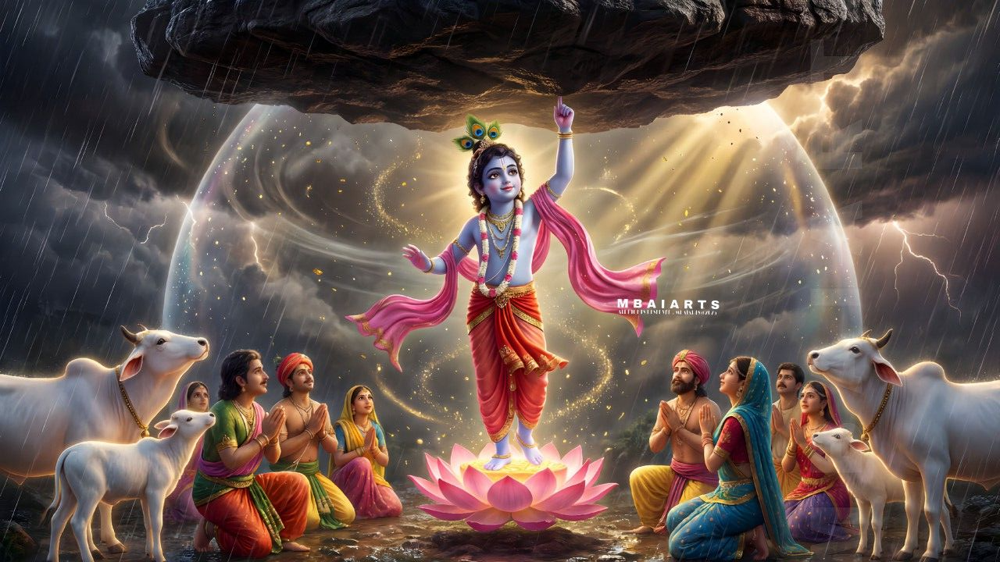

The Story

The villagers of Vrindavan prepare a grand offering to Indra, the rain god, hoping for good rains. Tables are laid, songs are sung, and the whole village gathers with expectation.
Krishna watches and asks a gentle question. Why not honor Govardhan Hill instead, he says, since it is the land and the cattle that sustain their lives each day? The villagers pause, then agree.
The offering shifts from the heavens to the hill. It is not a rejection of the sky, but a lesson in gratitude for what is near and real.
The village walks to the hill with songs and simple gifts. Krishna teaches that gratitude should be offered first to the sources that directly nourish the people: the soil, the animals, and the community.
Indra hears of this change and feels insulted. He believes the village has forgotten the power of the rains that feed their fields.
In anger, Indra sends a fierce storm. Thunder cracks, clouds gather, and the rain pours without pause. The paths flood and the roofs shake.
The villagers run in fear. Cattle slip in the mud, and the youngest children cry. The storm seems without end.
Krishna steps forward and lifts Govardhan Hill with one hand like an umbrella. He invites the villagers, the cattle, and the elders to shelter beneath it.
Everyone gathers under the hill. Krishna stands calm, holding the mountain aloft as the storm rages outside like a wall of water.
Hours pass and then days. The villagers are safe, and they see that protection does not always come from distant power.
Inside the shelter, Krishna speaks softly. He reminds them to keep faith and to trust their unity. The storm cannot break a community that stands together.
The rain tries to seep in, but the hill holds. The villagers feed the cattle and share food with one another, turning fear into patience.
Indra, watching from above, begins to see the cost of his pride. The storm has not humbled the village; it has strengthened it.
At last he ends the storm. The clouds part. The sun returns, and the fields breathe again.
Indra descends and bows in respect. He acknowledges Krishna's wisdom and accepts that strength without humility leads to harm.
Krishna lowers the hill gently. The villagers step out into the fresh air, grateful for their safety and for the lesson of the storm.
The story spreads across the land. It becomes a reminder that pride can cloud judgment, and that leadership is measured by care.
Govardhan is honored afterward as a symbol of balance. The hill stands not as a monument of power, but as a sign of protection and humility.
The villagers return to their work with new gratitude. They honor the earth that feeds them and the community that supports them.
Krishna's act is remembered not only for its wonder, but for its wisdom. It teaches that devotion must be rooted in understanding.
It teaches that true protection is steady and quiet, not proud or loud. It teaches that guidance is strongest when it lifts others.
It also teaches responsibility. Power, even divine power, must serve the vulnerable rather than punish them.
The villagers pass this story to their children. They tell of the storm, the shelter, and the lesson that followed.
They tell of a leader who used strength to protect rather than to dominate. They tell of a god who chose humility over praise.
The hill remains, a quiet witness to that day. It reminds them to honor the land and to honor each other.
The rains return in season. The fields flourish. The village continues its life with a deeper sense of gratitude.
The story endures because it is both grand and practical. It speaks to the heart and to the daily work of living.
It asks every listener to consider where gratitude should rest and how pride can be transformed into humility.
And it closes with a simple truth: a community protected by wisdom will always stand stronger than a storm.